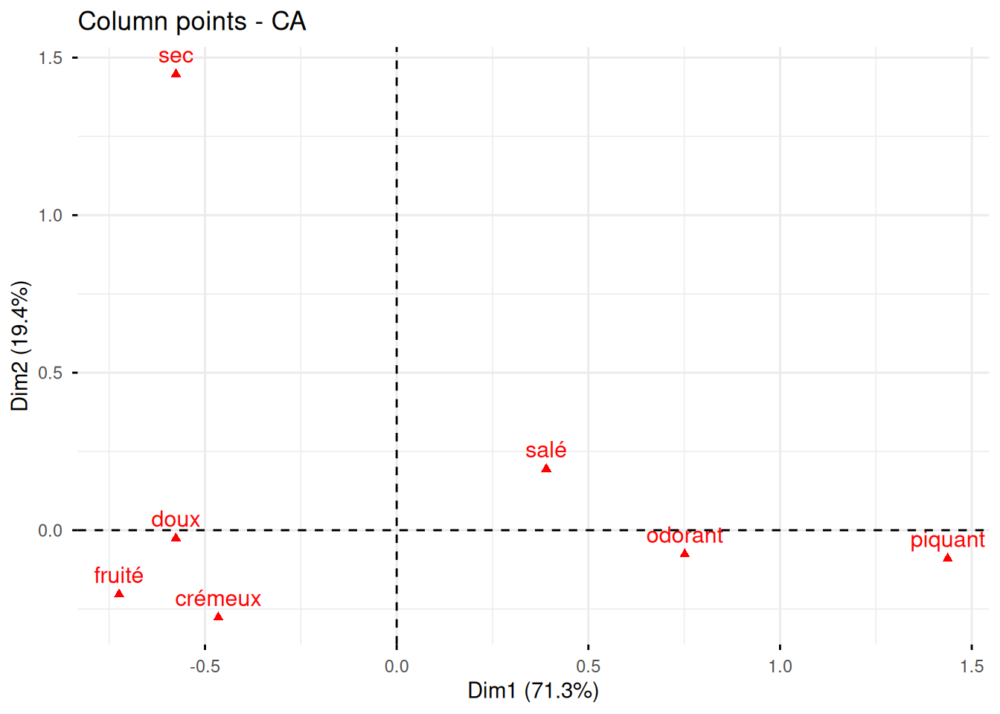
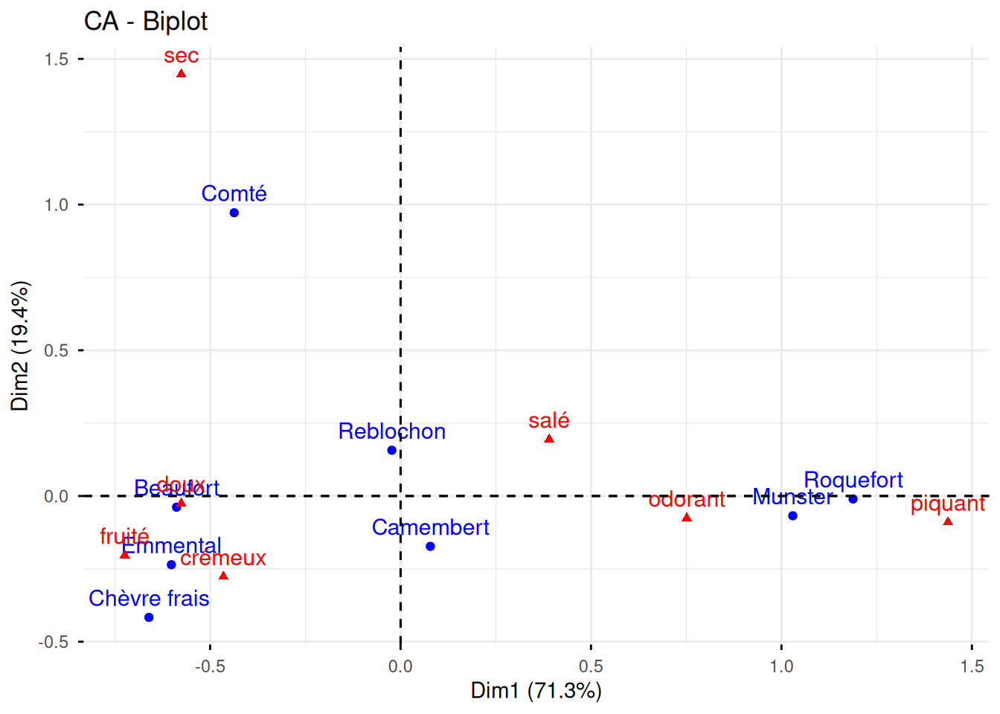
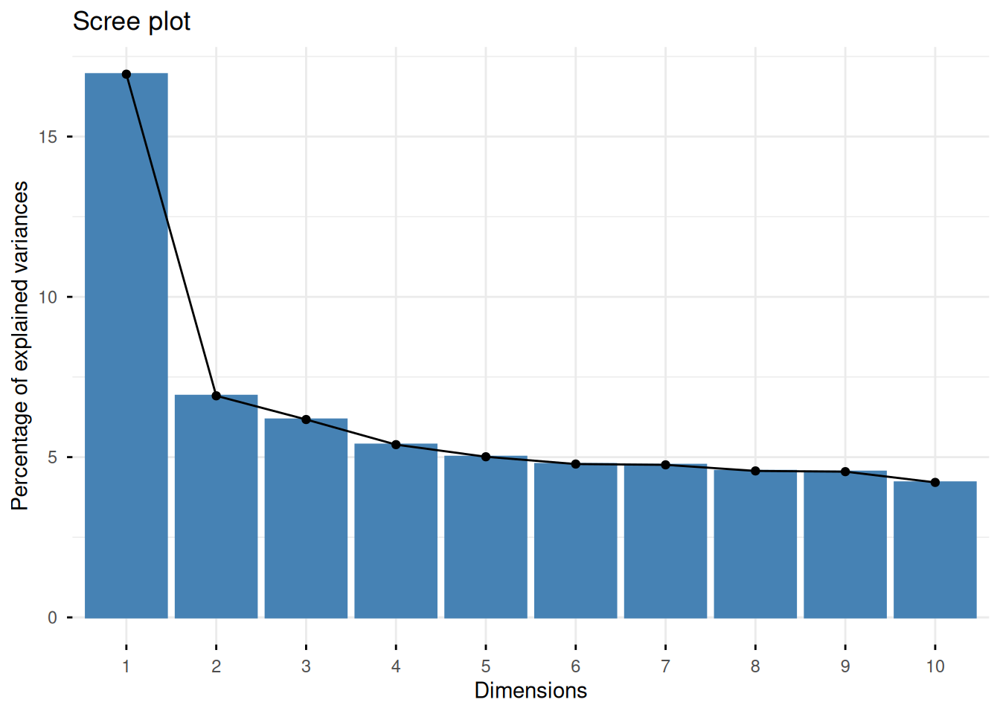
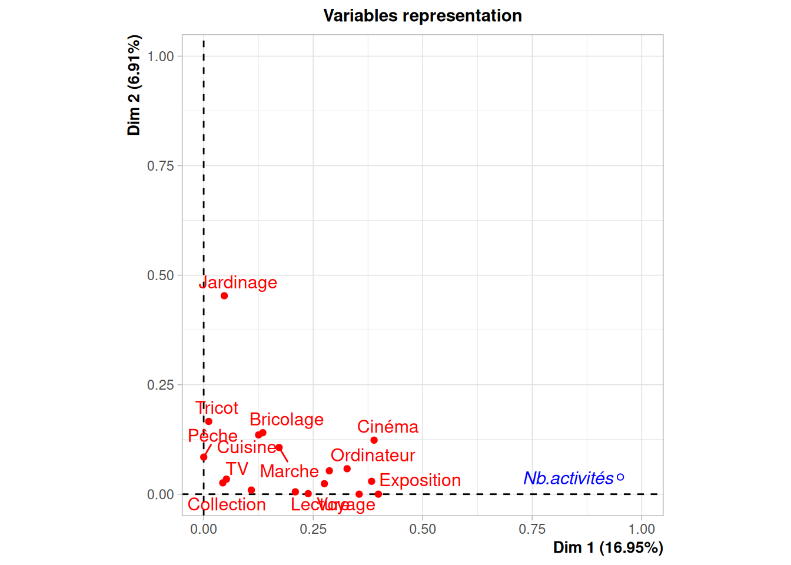
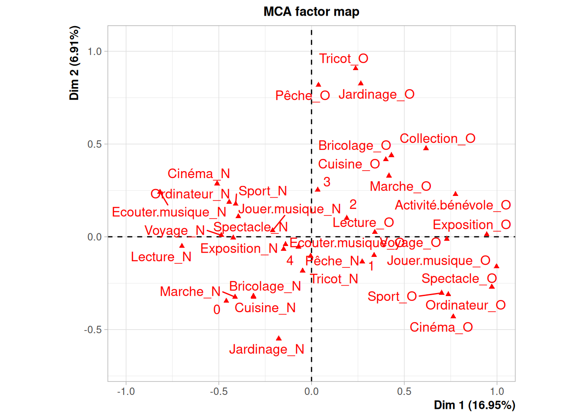
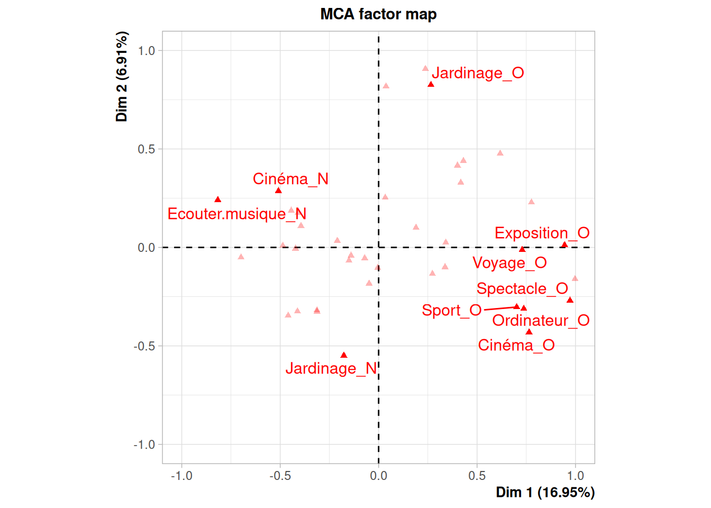
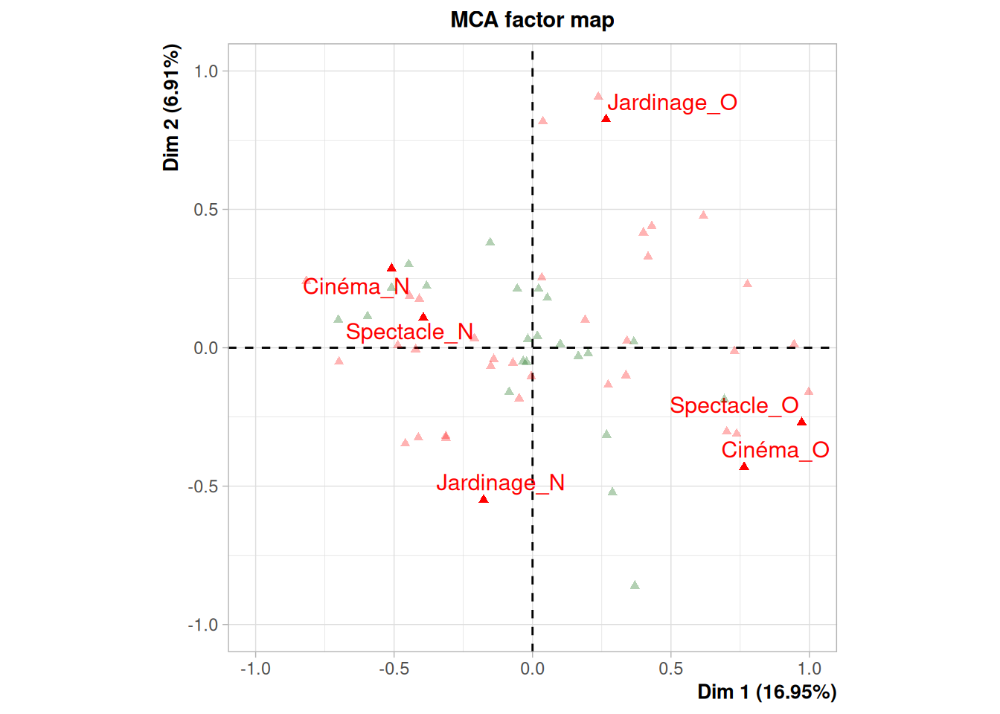
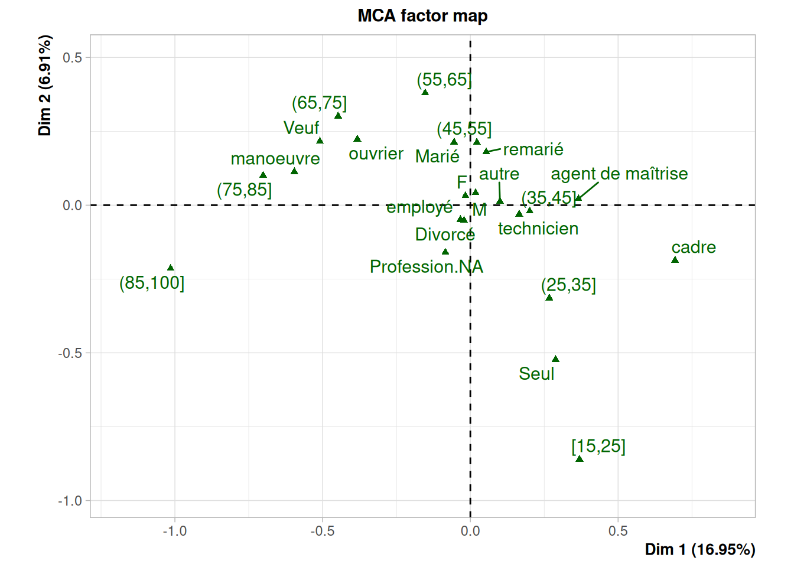
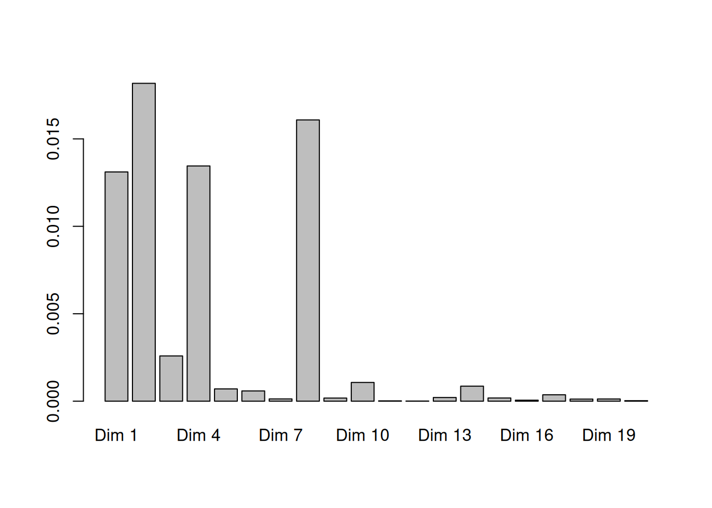
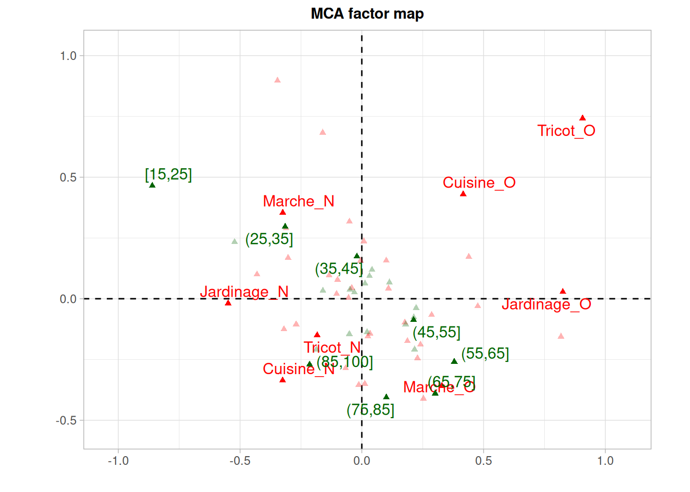

| doux | salé | fruité | piquant | crémeux | sec | odorant | |
|---|---|---|---|---|---|---|---|
| Emmental | 8 | 3 | 10 | 0 | 9 | 1 | 2 |
| Beaufort | 7 | 4 | 8 | 0 | 8 | 2 | 1 |
| Camembert | 5 | 6 | 1 | 1 | 7 | 0 | 6 |
| Roquefort | 0 | 9 | 0 | 10 | 1 | 0 | 9 |
| Munster | 1 | 7 | 0 | 8 | 2 | 0 | 10 |
| Chèvre frais | 9 | 1 | 4 | 0 | 11 | 0 | 1 |
| Reblochon | 4 | 6 | 3 | 1 | 5 | 2 | 5 |
| Comté | 6 | 5 | 2 | 0 | 3 | 6 | 1 |
TD2 - Analyse factorielle des correspondances et analyse des correspondances multiples
Ce TD a pour but de reprendre les notions de base de l’analyse factorielle des correspondances (AFC) et de l’analyse des correspondantes multiples vues en cours mais à partir d’exemples simples. Ce TD permet aussi de voir les commandes principales utiles pour mettre en oeuvre ce type de méthode.
Dégustation de fromages
On s’intéresse à 8 fromages AOP, évalués par un panel de dégustateurs à l’aide de 7 descripteurs sensoriels. Pour chaque fromage, les dégustateurs devaient choisir le descripteur jugé le plus caractéristique.
Les descripteurs sont doux, salé, fruité, piquant, crémeux, sec, odorant
Les fromages sont Comté, Beaufort, Camembert, Roquefort, Munster, Chèvre frais, Reblochon, Emmental
Le tableau suivant donne, pour chaque fromage, le nombre de fois où chaque descripteur a été choisi.
Tableau 1 : Fromages × descripteurs
On note ce tableau de contingence (X = (x_{ij})) avec - (i = 1,,I) les fromages, - (j = 1,,J) les descripteurs.
- En reprenant les notations du cours combien, donner les valeurs de \(k_{1+}\), \(k_{+2}\), \(n\), \(k_{12}\), \(f_{1+}\), \(f_{+2}\), \(f_{ij}\)
\(k_{i+}\) est l’effectif de la ligne i donc \(k_{1+} = 33\), \(k_{2+}=30\)
\(k_{+j}\) est l’effectif marginal de la colonne \(j\) \(k_{+1}=40\), \(k_{+2}=41\) etc
\(n\) est l’effectif total , \(n=221\)
La fréquence marginale \(f_{1+}=k_{1+}/n= 0.1493213\), c’est la proportion de Comté évalué parmi l’ensemble des dégustations
La fréquence marginale \(f_{+1}=k_{+1}/n= 0.1809955\), c’est la proportion de dégustation pour lesquelles le descripteur doux a été choisi
*\(f_{ij}=k_{ij}/n\) \(f_{11}=8/221=0.0361991\) c’est la proportion de comté qui ont été descrits comme doux dans l’ensemble des dégustations.
- Sous l’hypothèse où le type de fromage et le descripteur sont deux variables indépendantes, quelle relation devrait vérifier les fréquences ?
- Si les deux variables sont indépendantes \[P(Fromage = i, Descripteur = j)=P(Fromage = i) P(Descripteur = j)\] Donc \[f_{ij} = f_{i+} f_{+j}\]
Profils lignes
- Donner pour chaque decripteur le nombre de fois où il a été choisi.
Ce sont exactement les \(k+j\)
- Rappeler la forme de la matrice de données utilisées pour étudier les profils lignes.
On travaille sur la matrice des fréquences empiriques \[X_{ij} = f_{ij}/f_{i+}\]
- Rappeler le poids attribué à chaque individu (chaque ligne).
Chaque ligne est affecté du poids \(f_{i+}\), une ligne a un poids plus élevé si elle a une fréquence plus forte.
- Déterminer le profil ligne moyen.
le profil ligne moyen \(L=(L_{.1}, \ldots, L_{iJ})\) est la moyenne pondérée, la pondération est le poids \(\omega_i\) de chaque ligne \[L_{.j} = \sum_{i=1}^I \omega_i x_{ij} =\sum_{i=1}^I f_{i+} \frac{f_{ij}}{f_{i+}} = \sum_{i=1}^I f_{ij} = f_{+j}\] C’est la proportion de descripteurs \(j\) choisis parmi toutes les dégustations
- Rappeler la métrique utilisée et calculer l’inertie.
On pondére chaque variable \(i\) par le poids \(\frac{1}{f_{+j}}\). Dans la distance entre individu, les modalités rares ont un rôle particulier. Si une modalité est rare, elle est très discriminante sur les profils lignes.
- Quel est le nombre d’axes principaux maximum ?
\[Min(I-1, J-1)= min(8-1, 7-1)=6\]
Profils colonnes
Pour vérifier votre compréhension, essayer de répondre aux mêmes questions sur les profils colonnes.
Laisser les étudiants le faire chez eux
Mise en oeuvre de l’AFC
- A quelle valeur correspond la somme des valeurs propres ?
C’est la statistique de test du text du Chi2 divisé par l’effectif.
- Dans quel cas, une valeur propre vaut 1 ?
une valeur peut valoir 1, un sous groupe de colonnes, identifie parfaitement un sous groupe de lignes
- Voici les valeurs propres obtenues sur les données de dégustation fromage, Combien d’axes avez-vous envie de considérer ?
eigenvalue percentage of variance cumulative percentage of variance
dim 1 0.4925864639 71.29381599 71.29382
dim 2 0.1342574414 19.43156385 90.72538
dim 3 0.0430350236 6.22861422 96.95399
dim 4 0.0178732104 2.58685423 99.54085
dim 5 0.0029255339 0.42342308 99.96427
dim 6 0.0002468579 0.03572864 100.000002 au vu du graphique, mais il ne faut pas s’interdire d’aller voir plus loin, c’est ce qu’on fait dans le 2ème exo.
Analyse des profils colonnes
- Les contributions à la construction des axes de chacun des descripteurs sont données ci-dessous. Quels sont les descripteurs les plus contributifs pour le premier axe, pour le second ?
| Dim 1 | Dim 2 | Dim 3 | Dim 4 | Dim 5 | Dim 6 | |
|---|---|---|---|---|---|---|
| doux | 12.187581 | 0.0877877 | 7.0322716 | 12.879109 | 1.8845841 | 47.8291191 |
| salé | 5.736433 | 5.2345594 | 0.6389908 | 16.237836 | 50.1845312 | 3.4156131 |
| fruité | 13.485453 | 3.9072547 | 62.0039410 | 7.062007 | 0.8643095 | 0.0073517 |
| piquant | 37.949380 | 0.5451211 | 12.3265268 | 39.561058 | 0.2088129 | 0.3593277 |
| crémeux | 9.143291 | 11.8691832 | 12.4980939 | 2.651583 | 2.4058488 | 40.6175206 |
| sec | 3.349047 | 77.6759893 | 0.3411195 | 1.734490 | 4.1735057 | 7.7484730 |
| odorant | 18.148815 | 0.6801046 | 5.1590565 | 19.873917 | 40.2784077 | 0.0225948 |
piquant et odorant pour le premier axe
sec et crémeux pour le second
- Le tableau ci dessous donne la qualité de la représentation. Identifier un descripteur peu contributif à la création de l’axe 1 et pourtant bien représenté.
- doux est très bien représenté alors qu’il ne contribue pas tant que ca sur le premier axe.
| Dim 1 | Dim 2 | Dim 3 | Dim 4 | Dim 5 | Dim 6 | |
|---|---|---|---|---|---|---|
| doux | 0.9144098 | 0.0017952 | 0.0460955 | 0.0350614 | 0.0008398 | 0.0017984 |
| salé | 0.7075103 | 0.1759652 | 0.0068853 | 0.0726673 | 0.0367607 | 0.0002111 |
| fruité | 0.6666470 | 0.0526451 | 0.2677868 | 0.0126671 | 0.0002538 | 0.0000002 |
| piquant | 0.9344436 | 0.0036585 | 0.0265173 | 0.0353457 | 0.0000305 | 0.0000044 |
| crémeux | 0.6722481 | 0.2378503 | 0.0802806 | 0.0070738 | 0.0010506 | 0.0014966 |
| sec | 0.1359107 | 0.8591623 | 0.0012094 | 0.0025540 | 0.0010059 | 0.0001576 |
| odorant | 0.9191485 | 0.0093879 | 0.0228269 | 0.0365209 | 0.0121152 | 0.0000006 |
- On obtient la projection suivante pour les profils colonnes dans le premier plan principal. Que pouvez-vous dire des liens entre les descripteurs ?

piquant et odorant sont du même coté, sur l’axe 1, il ont des profils lignes similaires c’est à dire que sont associés à ces qualificatif de la même manière.
même chose pour fruité et doux
- sec a un profil très atypique
- A votre avis où devrait-on trouver le munster ?
On devrait le trouver à droite si il avait été dégusté
- Voici la représentation conjointe des profils lignes et colonnes, rédiger 5 lignes d’analyse obtenue à partir de cette représentation.

- Le premier axe oppose le caractère piquant et odorant au caractère doux et crémeux. on retrouve donc à droite les fromages forts munster et roquefort (mais étrangement pas le camembert) et de l’autre les fromages plus doux le chèvre frais, l’emmental et le beaufort Le comté est plus haut sur l’axe 2, il s’associe de manière préféretielle au caractere sec.
Variables supplémentaires
- Selon vous, à quel endroit du plan s’attend-on à trouver un crottin de chèvre bien sec, le livarot, le caprice des Dieux ?
Analyse des activités de Loisir
La base loisirs est un jeu de données individuel destiné à l’étude des comportements de pratique des loisirs et de leurs déterminants socio-démographiques. Chaque observation correspond à un individu, et les variables renseignent :
les pratiques de loisirs Un ensemble de variables binaires ou qualitatives décrivant la participation à différentes activités culturelles, récréatives ou domestiques : Lecture, Écouter.musique, Cinéma, Spectacle, Exposition, Ordinateur, Sport, Marche, Voyage, Jouer.musique, Collection, Activité.bénévole, Bricolage, Jardinage, Tricot, Cuisine, Pêche, TV (niveau d’utilisation de 0 à 4).
Des indications socio-démographiques Sexe, Âge, Situation.matrimoniale et Profession fournissent des informations permettant de caractériser les individus et d’expliquer les variations de comportements de loisirs.Il y a quelques valeurs manquantes.
Une Variable synthétique Nb.activités est une variable dérivée indiquant, pour chaque individu, le nombre total d’activités pratiquées parmi celles listées.
Ces données sont disponibles sur le site de Francois Husson.
- On cherche à construire une visualisation de cette base, permettant de mettre en évidence des liens potentiels entre différentes. Quelle est la méthode adaptée ?
une ACM
- Rappeler les éléments clés pour construire une ACM (tableau de données, métrique et poids).
une ligne est le tableau des données encodées sous forme one hot encoding (codage en 0/1 pour chaque modalité de chaque variable)
- L’analyse des correspondances multiples est mise en oeuvre à l’aide de la fonction
MCAci-dessous. Seules les activités de loisirs sont utilisées pour construire ACM. Indiquez toutes les variables supplémentaires. Que signifie le fait qu’une variable est supplémentaire dans une analyse factorielle ?
Les variables catégorielles socio démographiques et la variable quanti sur le nombre d’activités
- A partir du graphique d’inertie ci-dessous, discuter la répartition de l’inertie sur les 2 premières dimensions.
| eigenvalue | percentage of variance | cumulative percentage of variance | |
|---|---|---|---|
| dim 1 | 0.1977116 | 16.946704 | 16.94670 |
| dim 2 | 0.0806491 | 6.912781 | 23.85948 |
| dim 3 | 0.0720218 | 6.173298 | 30.03278 |
| dim 4 | 0.0628724 | 5.389066 | 35.42185 |
| dim 5 | 0.0584600 | 5.010860 | 40.43271 |
| dim 6 | 0.0558124 | 4.783924 | 45.21663 |
| dim 7 | 0.0555234 | 4.759147 | 49.97578 |
| dim 8 | 0.0533082 | 4.569278 | 54.54506 |
| dim 9 | 0.0530444 | 4.546664 | 59.09172 |
| dim 10 | 0.0491301 | 4.211153 | 63.30288 |
| dim 11 | 0.0464933 | 3.985139 | 67.28802 |
| dim 12 | 0.0450743 | 3.863513 | 71.15153 |
| dim 13 | 0.0435131 | 3.729690 | 74.88122 |
| dim 14 | 0.0433607 | 3.716628 | 78.59785 |
| dim 15 | 0.0408000 | 3.497142 | 82.09499 |
| dim 16 | 0.0379816 | 3.255564 | 85.35055 |
| dim 17 | 0.0373349 | 3.200134 | 88.55069 |
| dim 18 | 0.0362192 | 3.104506 | 91.65519 |
| dim 19 | 0.0349682 | 2.997272 | 94.65246 |
| dim 20 | 0.0323421 | 2.772180 | 97.42464 |
| dim 21 | 0.0300458 | 2.575355 | 100.00000 |

L’inertie est très quitable répartie sur la plupart des dimnsiosn sauf la première qui captur. 20\(\%\) pour la première puis entre 3 et 7 pour les suivantes
Représentation des variables
- Expliquer ce qui est représenté sur le graphique suivant et discuter du rôle particulier de la variable quantitative supplémentaire.

On fait le rapport entre l’inertie d’une variable et l’inertie portée par cette même variable (avec toutes ses modalités) lorsqu’elle a été projeté sur le premier axe. plus on est proche de 1, mieux cette variable est représentée.
Même chose pour l’axe 2. On repere ensuite une variable avec ces deux valeurs,
- Quelles sont les variables les mieux représentées sur l’axe 1, l’axe 2 ?
Expostion, spectacle et Cinéma sont bien représentés sur l’axe 1. jardinage est la mieux représenté sur l’axe 2
Représentation des différentes modalités.
Le graphique ci-dessous représente l’ensemble des modalités

- Pour y voir plus clair, on s’intéresse au 10 variables les plus contributives, quel enseignement pouvez-vous tirer de ce graphique ?
- Sur le graphique complet on constante que les modalités O et n d’une même variable s’oppose par rapport au centre de garvité. Celui ci n’est pas le centre du segment des ces deux modalités à cause des poids différents des modalités (les fréquences).
Sur le graphique epuré, on constate que l’axe 1 sépare les modalité O à droite et les modalités N à gauche.
L’axe 2 oppose semble t il les 2 modalités de jardinage qui semble etre une variable très discriminante.

- Peut-on affirmer que les personnes qui vont à des expositions ont également tendance à aller au spectacle ?
on peut si ces variables sont bien représentées, sans cette information on ne peut pas vraiment conclure même si en général les variables contributives sont assez bien représentées.
- Les personnes adeptes du jardinage passent-elles peu de temps sur leur ordinateur ?
A nouveau il faut s’assurer de la qualité de la représentation. Sous réserve qu’elles soient bien représentées.
Les deux modalités ont toutes les deux des valeurs positives sur l’axe 2, ce qui pourrait aller dans le sens de l’affirmation toutefois elles s’opposent un peu sur l’axe1. Les deux modalités sont finalement assez éloignées l’une de l’autre et ne s’associe pas vraiment.
- A votre avis quelles sont les caractéristiques démographiques des personnes adeptes du Jardinage ?
On s’attend peut etre à des personnes plutot agées,
- Dans le graphique ci-dessous, on ne représente que les modalités dont le \(cos^2\) est supérieur à 0.4. Expliquer de quel \(cos^2\) il est question. Comparer avec le graphique précédent. Est ce surprenant ?

Les variables les plus contributives ne sont pas toujours bien représentées ! Le seuil de 0.4 est choisipour illustrer ca. on peut montrer aux étudiants un autre seuil pour voir la différence.
Prise en compte de variables supplémentaires.
On s’intéresse à la variable suppémentaire Age.
- Selon votre intuition à la question 10, ou devrait-on retrouer les personnes de 65 à 75 ans ?
plutot en haut du coté du jardin
- Que constatez-vous pour la variable Age ?
Elles sont bien en haut mais sont assez différentes sur l’axe 1. Ce sont aussi des personnes qui vont moins au spectacle, au cinéma etc

- Le tableau ci-dessous donne la qualité de représentation pour chacune des modalités de la variable Age. Quelle information peut-on en tirer ?
(25,35] (35,45] (45,55] (55,65] (65,75] (75,85]
0.031285680 0.009937587 0.012782877 0.029487348 0.036519518 0.030560953 Ouais tout ca est mal rerpésenté, attention à ne pas faire dire n’importe quoi. les variables supplémentaires peuvent être très déformées par la projection qui a été construite
- On refait l’analyse en gardant plus de dimensions principales (argument
ncpdeMCA) et on illustre la qualité de la représentation des(25-35]pour chaque axe principal. Comment expliquer cette qualité de représentation ?

Parce que ces variables n’ont pas été utilisés,la projection n’est pas construite pour préserver l’information qu’elles portent
- Quel est le plan le plus pertinent pour bien visualiser les sondés de la catégories
(25-35]?
le plan 2 8
- Dans le graphique ci-dessous, seules les modalités dont le cos2 sont supérieures à 0.2 sont représentées. Discuter ce que vous voyez en 5 lignes max.

Les 25 35 ne marchent pas !!!!